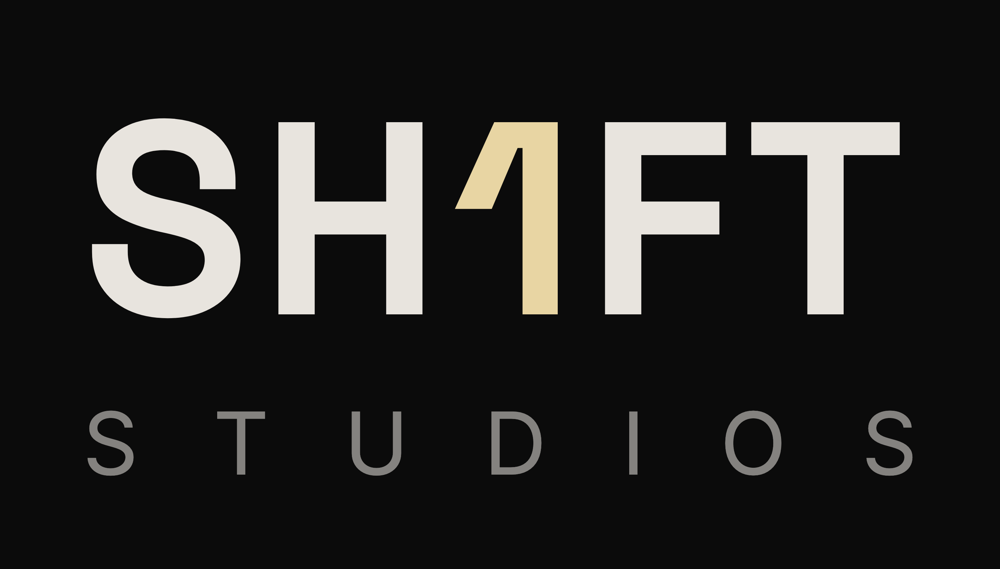
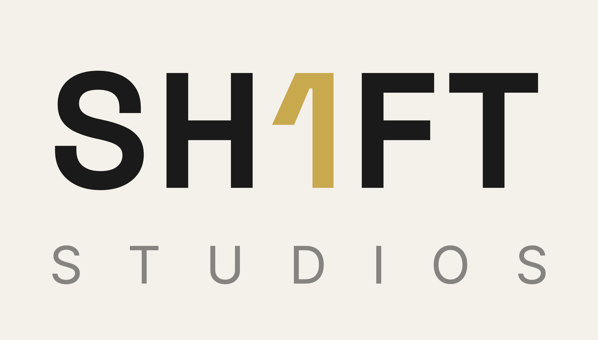
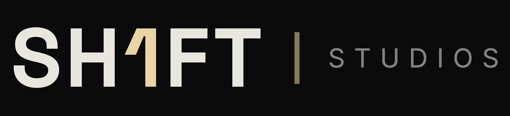
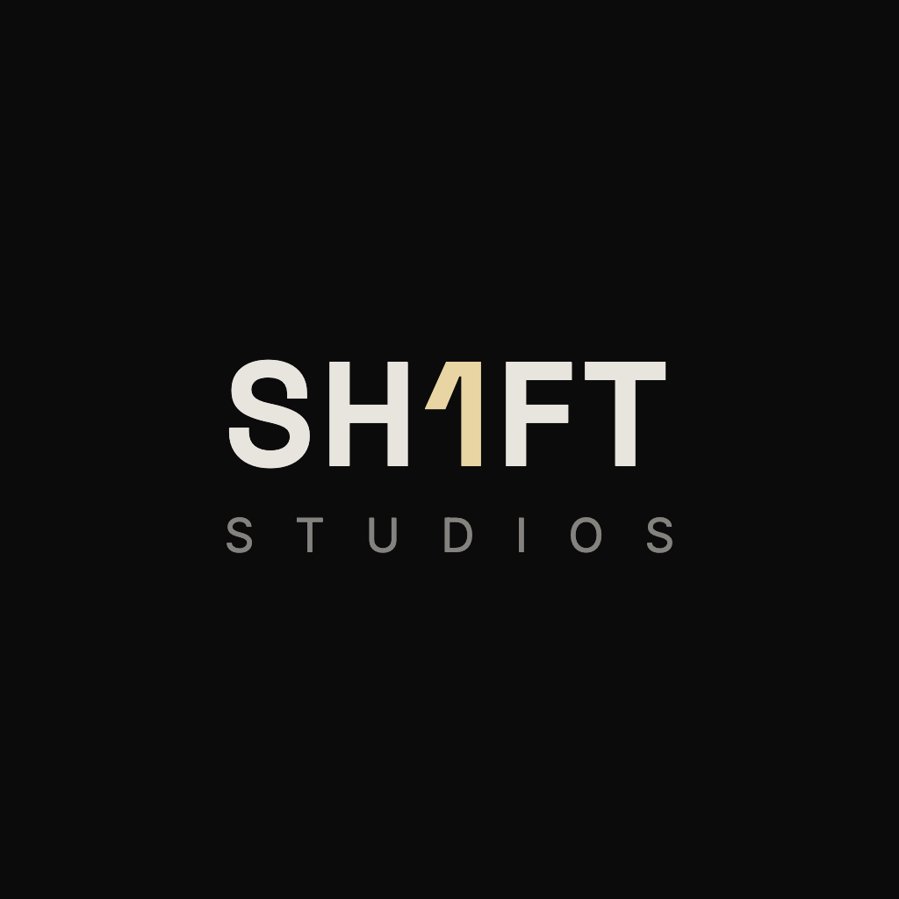

The same mark as Shift1 Productions — Space Grotesk 700, the I replaced by a gold 1 — with the descriptor swapped. The only thing that needed a decision: STUDIOS is seven characters against PRODUCTIONS’ eleven, so the tracking is opened from 0.30em to about 0.87em to keep the second line spanning the wordmark exactly as before. Nothing else moves.
Stacked, as the Productions logo. Transparent PNG — drops onto any surface.

shift1studios-lockup-transparent.png · 2910 × 1658
Near-black and cream. On cream the gold goes deeper (#c9a94e) — the site accent is ~1.05:1 on a light ground and would disappear.


shift1studios-lockup-dark.png · shift1studios-lockup-light.png
For site headers, letterheads and anywhere the stack is too tall. A hairline rule in the accent separates mark from descriptor.


shift1studios-horizontal-transparent.png · shift1studios-horizontal-dark.png · 3400 × 780
1024px square, same geometry as the Productions A2 icon. Worth repeating the finding from that round: at feed size the descriptor is gone and the wordmark is small — for an actual avatar the two-line or numeral-only marks win.

shift1studios-ig-1024.png · 1024 × 1024
Unchanged from Productions — same file, included so the set is complete.

shift1studios-wordmark-transparent.png · 2181 × 1040